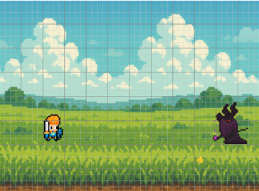
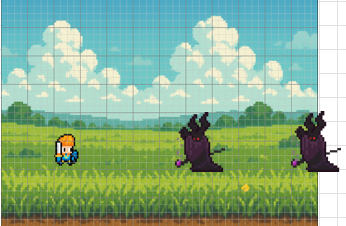
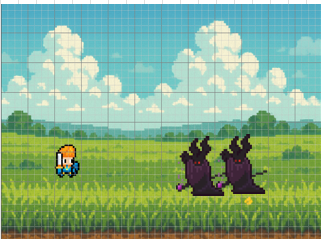
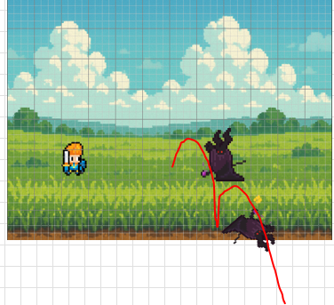

layout_演出_バトル
バトル演出のモックアップ画像一覧。詳細仕様は 演出_01_バトル を参照。
01. エンカウント（1体）

エンカウント直後。敵が左から0.2秒でスライド移動し所定位置へ。
02. スタック2体整列

2体目の敵が画面外から移動し、先頭の後ろに整列した状態。
03. 次鋒前進

先頭の敵の死亡演出開始と同時に、次鋒が前方へ即座に前進を開始した状態。
04. 死亡演出

HP0時に後ろへ回転しながら倒れ、ディスプレイ枠でワンバウンドして場外退場する演出の途中。